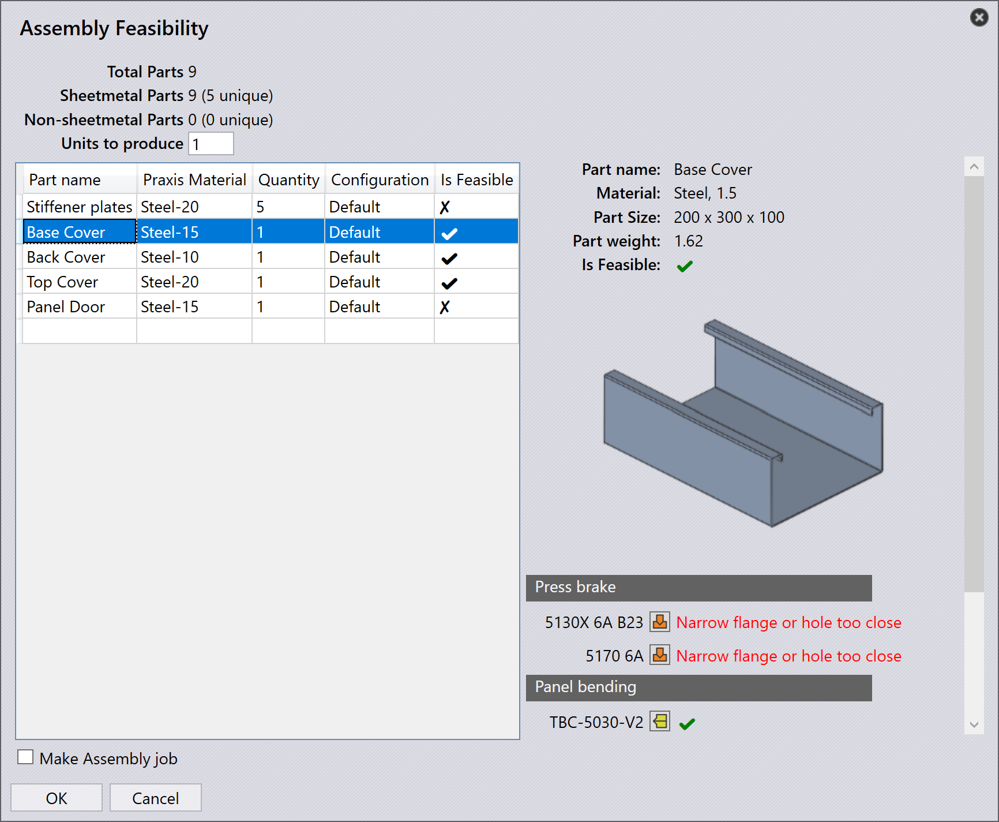

检查可行性
TruSmartCAM SolidWorks 插件中的零件可行性功能允许用户验证是否可以使用 TruSmartCAM 中可用的工厂机器和工装配置成功生产钣金零件。
此功能复制了 TruSmartCAM 引擎在实际零件上传期间执行的相同分析步骤，但在本地运行——不会修改或替换 TruSmartCAM 零件库中的任何现有零件。
-
可行性对话框显示 TruSmartCAM 中配置的所有可用工厂机器的分析结果。
-
每台机器的状态显示为：
-
可行 - 零件可以成功加工。
-
警告 - 零件可以在有限制的情况下加工（例如，弯曲或切割约束）。
-
错误 - 零件因阻塞问题而可行性失败。
-

-
单击
 图标以打开评估的技术文件（TecZone 或 MetaCAM）以进行详细检查。
图标以打开评估的技术文件（TecZone 或 MetaCAM）以进行详细检查。
对于装配体，相同的功能对每个单独的钣金组件执行全面的可行性分析。
-
结果显示在 Assembly Feasibility 对话框中，列出每个零件的材料、配置和可行性状态。
-
选择零件将在右侧面板上显示其详细信息，包括材料、尺寸、重量和可行性结果。

-
装配体的可行性分析逐个零件执行，使用与单个零件可行性检查相同的逻辑。
-
在第一个阻塞错误处自动停止该过程，在该处无法继续进行。
-
仅分析具有有效材料和参数的钣金零件。
-
跳过非钣金组件，但仍列出以供参考。
-
由于可行性运行不会将数据保存或上传到 TruSmartCAM，因此可以安全地用于早期设计验证和"假设"分析场景。
|
您必须拥有有效的 TecZone 或 MetaCAM 许可证才能打开和查看可行性结果中链接的生成的技术文件。 |